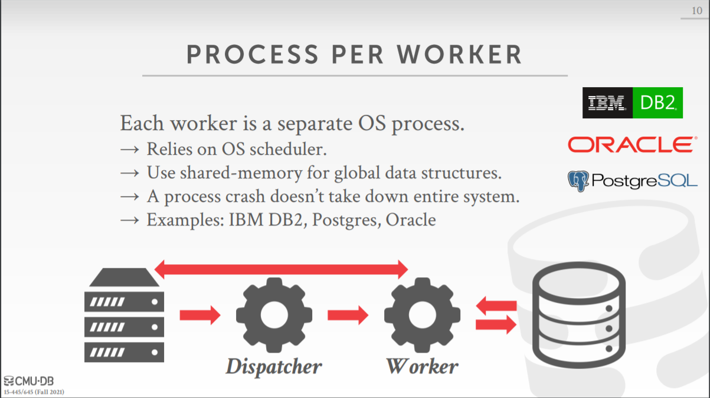
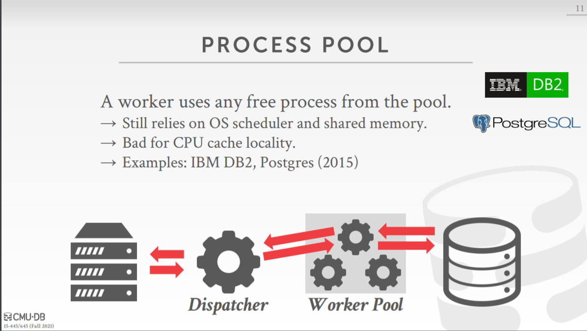
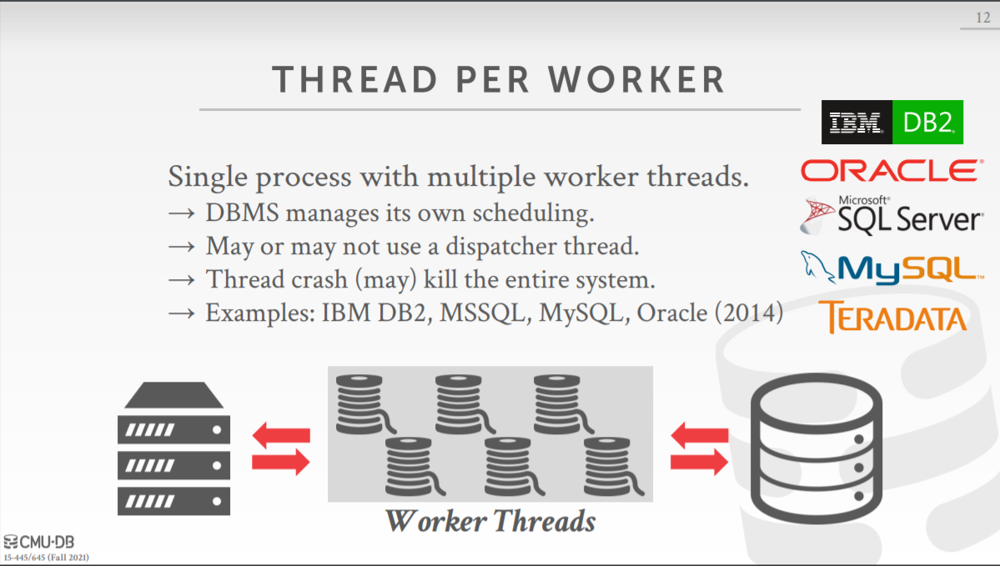
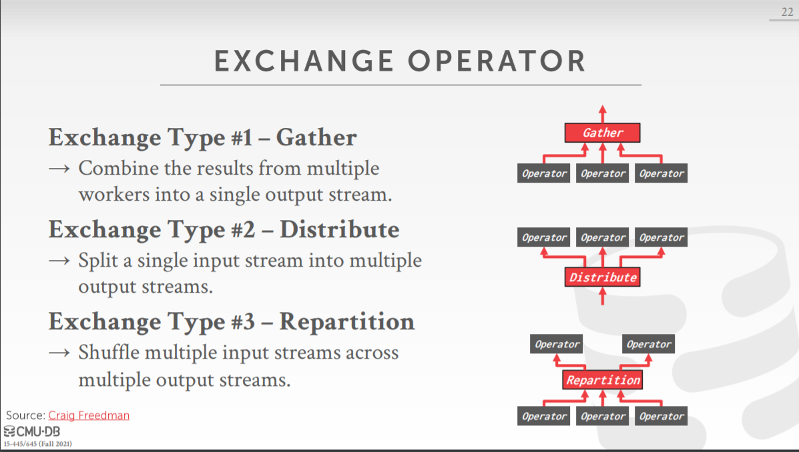
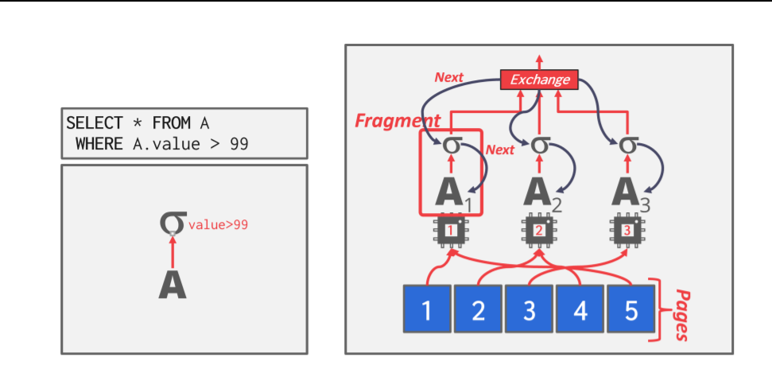
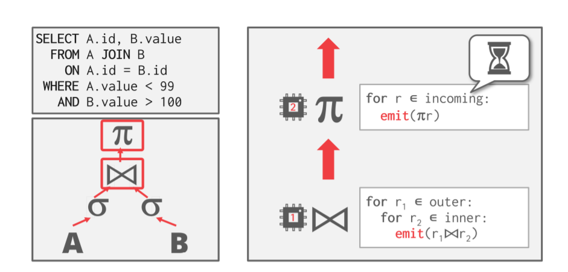
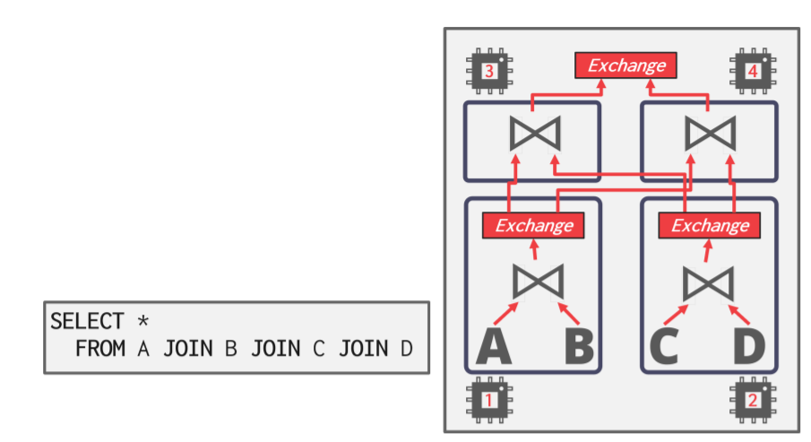

[CMU15445]:查询处理2
Background
为什么使用并行执行
- 可以增加吞吐量并且减少延迟
- 从客户的角度可以提高响应性以及可用性
- 降低TCO(total cost of ownership)
Parallel vs Distributed Databases
在并行以及分布式数据库当中，一个数据库会被分配到很多**资源(resource)*上，这样做可以提高并行性，这里所指的资源包括CPU, 磁盘, Socket, GPU, 主机*等等
并行DBMS和分布式DBMS的区别
并行DBMS
在并行DBMS当中，各个资源，或者说节点, 在物理上是紧密连接的，它们之间的交互不仅要快速而且代价也十分的低，并且它们之间的连接是可靠的
分布式DBMS
在分布式DBMS当中，各个资源可能相距很远，之间的通信速度也比较慢，比如通过网络进行通信，连接也同样是不可靠的
即使一个数据库可能被分为多个节点，但是对于应用程序来说，只有一个数据库实例，因此，无论是单节点还是多节点，一个SQL查询返回的结果应该都是一样的
接下来，我们重点关注并行DBMS
Process Models
处理模型决定了数据库是怎样从怎样支持多用户的并发环境的
一个数据库由很多worker构成，由他们进行实际的数据处理，当数据库一次性接受大量用户请求的时候，那么这些任务就会被分派到这些worker手上进行处理
下面介绍三种不同的处理模型
Process per Worder
该模型是最古老的模型了，基于进程而不是线程，原因就是在那时线程API还没有规范化
在该模型当中，每一个Worker就是一个单独的操作系统的进程，当用户发出请求的时候，会有一个**调度员(dispatcher)**来接受这个请
求，同时由它fork出一个进程来单独处理这个请求

优点
当一个进程崩溃时，整个数据库不会崩溃
缺点
由于每个进程都有一个自己的
buffer pool, 他们都要从磁盘上取出page, 这就可能导致一个page在多个buffer pool上重复出现，无疑会浪费内存一个解决方案是采用操作系统的共享内存, 这样多个进行就可以共享同一个数据结构
Process Pool
在该模型当中，依旧是基于进程来进行请求的处理，不过不再是每有一个请求就创建一个新的进程了，而是采用了一个进程池来进行处理，这个进程池中维护者一些进程，每当有查询请求连接到数据库的时候，就会由调度器从进程池当中找出适合的进程来对查询进行处理注意，在该模型当中，由于这些进程都被统一维护在进程池中，所以这些进行之间可以相互协助，即一个进程的部分任务可以分配给其他进程

Thread per Worker
该模型是当今主流数据库系统基本上都会采用的模型，整个数据库系统只有一个进程，将每个请求分摊到多个Worker线程上

优点
减少了上下文切换所带来的的开销
在线程之间切换比在进程之间切换容易的多，开销更小
整个数据库能够对Worker线程能够进行自己的调度，不再需要操作系统
不在需要维护共享内存，线程之间的内存本身就是共享的
缺点
线程的崩坏可能会造成整个数据库进程的崩溃
尽管实现了Therad per Worker,但是这并不意味着该DBMS就能够做到查询内并行
Scheduling
对于每个查询计划，DBMS必须得去决定在哪，在什么时候，怎样去执行，一些相关的问题包括
- 应该将该查询计划分成多少个Task
- 应该使用多少个CPU核
- 某个Task应该放在哪个CPU 核上
- 一个Task应该将它的输出保存在哪
不管怎样，当执行查询计划的时候，DBMS知道的都应该比操作系统更多
Inter-Query parallelism
在查询间并行的数据库当中，数据库会并发执行多个查询，这毫无疑问提高了吞吐量并且降低了延迟，但做到查询间并行并且保证数据不出错则很有挑战，将会在后面进行说明
Intra-Query parallelism
查询内并行是本篇文章的重点，支持查询内并行的DBMS会并行执行一个查询计划中的运算，这会降低那些需要长时间运行的查询的延迟
各种运算操作可以被看成是生产者/消费者，每个运算都是一个生产者，同时它们也是一个消费者，消费来自底层运算的数据
对于每个运算来说都有它们的并行版本，它们既可以使用多线程来访问同一个中心数据结构，也可以将它们的工作分区
接下来介绍一些关系运算的并行算法，他们之间不是互斥的，即DBMS可以将它们一起使用以达到最优性能
Intra-Operator Parallelism (Horizontal)
在运算内并行当中，查询计划被分为不同的段(fragements), 即多个线程，它他们会在一整个数据集合上的不同部分并行执行相同的函数，DBMS使用一种被称为exchange的操作符来将不同fragements的输出结果合并在一起
exchange操作符大体分为三种
- Gather: 将多个输入流组合成一个输出流
- Distribute:将一个输入流分解成成多个输出流
- Repartition: 将多个输入流组合，然后重新分配成多个输出流

例子

在该例子当中，一个选择操作被分为了三个fragement,然后使用Gather类型的
exchange operator进行输出
Inter-Operator Parallelism (Vertical)
在操作间并行当中，DBMS会将不同操作产生的中间结果进行重叠，以达到流水线效果了，所以该方法有时又被称为pipeline parallelism
这种方法广泛应用于流处理系统中，l流处理系统即连续地在输入tuple流上执行查询的系统

Bushy Parallelism
该操作是操作内并行和操作间并行的混合体，即既有单个操作被并发执行，并且多个操作也在并发执行

DBMS会使用exchange operator来存储中间结果
本博客所有文章除特别声明外，均采用 CC BY-SA 4.0 协议 ，转载请注明出处！